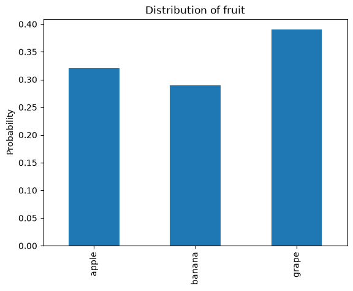
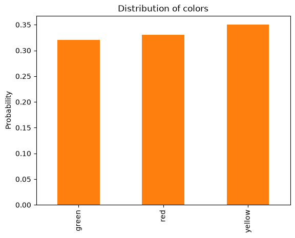
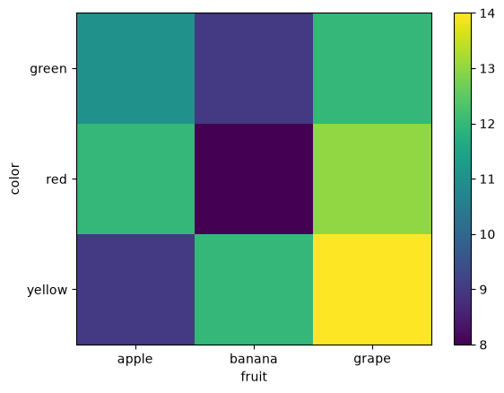
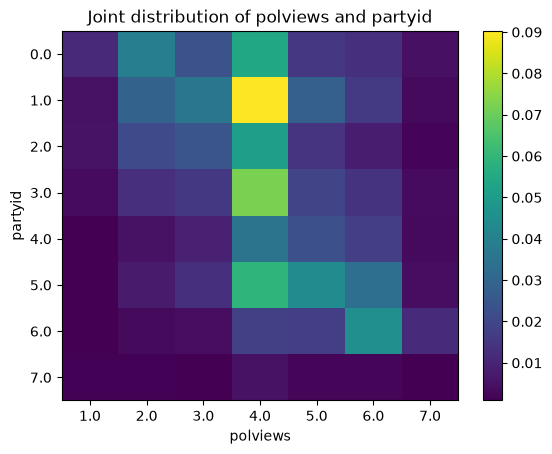
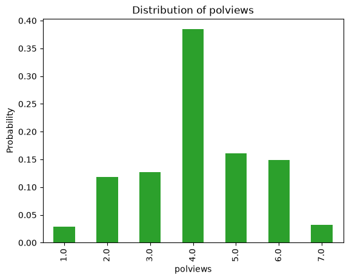
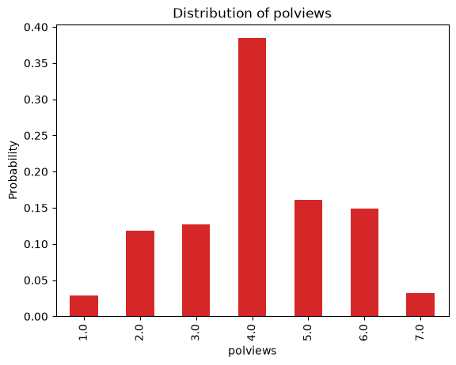
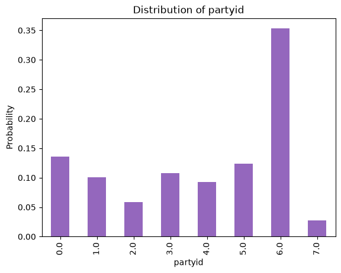
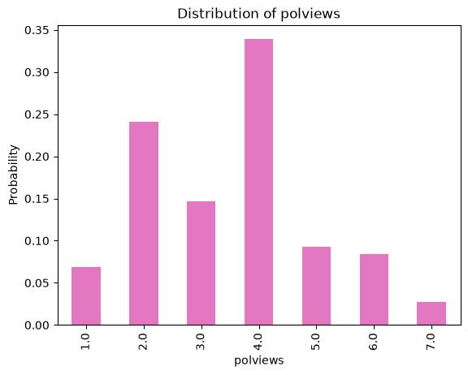

Joint Probability#
This notebook is part of Bite Size Bayes, an introduction to probability and Bayesian statistics using Python.
Click here to run this notebook on Colab. For the exercises, use the version with blanks.
import numpy as np
import pandas as pd
import matplotlib.pyplot as plt
Review#
So far we have been working with distributions of only one variable. In this notebook we’ll take a step toward multivariate distributions, starting with two variables.
We’ll use cross-tabulation to compute a joint distribution, then use the joint distribution to compute conditional distributions and marginal distributions.
We will re-use pmf_from_seq, which I introduced in a previous notebook.
def pmf_from_seq(seq):
"""Make a PMF from a sequence of values.
seq: sequence
returns: Series representing a PMF
"""
pmf = pd.Series(seq).value_counts(sort=False).sort_index()
pmf /= pmf.sum()
return pmf
Cross tabulation#
To understand joint distributions, I’ll start with cross tabulation. And to demonstrate cross tabulation, I’ll generate a dataset of colors and fruits.
Here are the possible values.
colors = ['red', 'yellow', 'green']
fruits = ['apple', 'banana', 'grape']
And here’s a random sample of 100 fruits.
np.random.seed(2)
fruit_sample = np.random.choice(fruits, 100, replace=True)
We can use pmf_from_seq to compute the distribution of fruits.
pmf_fruit = pmf_from_seq(fruit_sample)
pmf_fruit
apple 0.32
banana 0.29
grape 0.39
Name: count, dtype: float64
And here’s what it looks like.
pmf_fruit.plot.bar(color='C0')
plt.ylabel('Probability')
plt.title('Distribution of fruit');

Similarly, here’s a random sample of colors.
color_sample = np.random.choice(colors, 100, replace=True)
Here’s the distribution of colors.
pmf_color = pmf_from_seq(color_sample)
pmf_color
green 0.32
red 0.33
yellow 0.35
Name: count, dtype: float64
And here’s what it looks like.
pmf_color.plot.bar(color='C1')
plt.ylabel('Probability')
plt.title('Distribution of colors');

Looking at these distributions, we know the proportion of each fruit, ignoring color, and we know the proportion of each color, ignoring fruit type.
But if we only have the distributions and not the original data, we don’t know how many apples are green, for example, or how many yellow fruits are bananas.
We can compute that information using crosstab, which computes the number of cases for each combination of fruit type and color.
xtab = pd.crosstab(color_sample, fruit_sample,
rownames=['color'], colnames=['fruit'])
xtab
| fruit | apple | banana | grape |
|---|---|---|---|
| color | |||
| green | 11 | 9 | 12 |
| red | 12 | 8 | 13 |
| yellow | 9 | 12 | 14 |
The result is a DataFrame with colors along the rows and fruits along the columns.
Heatmap#
The following function plots a cross tabulation using a pseudo-color plot, also known as a heatmap.
It represents each element of the cross tabulation with a colored square, where the color corresponds to the magnitude of the element.
The following function generates a heatmap using the Matplotlib function pcolormesh:
def plot_heatmap(xtab):
"""Make a heatmap to represent a cross tabulation.
xtab: DataFrame containing a cross tabulation
"""
plt.pcolormesh(xtab)
# label the y axis
ys = xtab.index
plt.ylabel(ys.name)
locs = np.arange(len(ys)) + 0.5
plt.yticks(locs, ys)
# label the x axis
xs = xtab.columns
plt.xlabel(xs.name)
locs = np.arange(len(xs)) + 0.5
plt.xticks(locs, xs)
plt.colorbar()
plt.gca().invert_yaxis()
plot_heatmap(xtab)

Joint Distribution#
A cross tabulation represents the “joint distribution” of two variables, which is a complete description of two distributions, including all of the conditional distributions.
If we normalize xtab so the sum of the elements is 1, the result is a joint PMF:
joint = xtab / xtab.to_numpy().sum()
joint
| fruit | apple | banana | grape |
|---|---|---|---|
| color | |||
| green | 0.11 | 0.09 | 0.12 |
| red | 0.12 | 0.08 | 0.13 |
| yellow | 0.09 | 0.12 | 0.14 |
Each column in the joint PMF represents the conditional distribution of color for a given fruit.
For example, we can select a column like this:
col = joint['apple']
col
color
green 0.11
red 0.12
yellow 0.09
Name: apple, dtype: float64
If we normalize it, we get the conditional distribution of color for a given fruit.
col / col.sum()
color
green 0.34375
red 0.37500
yellow 0.28125
Name: apple, dtype: float64
Each row of the cross tabulation represents the conditional distribution of fruit for each color.
If we select a row and normalize it, like this:
row = xtab.loc['red']
row / row.sum()
fruit
apple 0.363636
banana 0.242424
grape 0.393939
Name: red, dtype: float64
The result is the conditional distribution of fruit type for a given color.
Conditional distributions#
The following function takes a joint PMF and computes conditional distributions:
def conditional(joint, name, value):
"""Compute a conditional distribution.
joint: DataFrame representing a joint PMF
name: string name of an axis
value: value to condition on
returns: Series representing a conditional PMF
"""
if joint.columns.name == name:
cond = joint[value]
elif joint.index.name == name:
cond = joint.loc[value]
return cond / cond.sum()
The second argument is a string that identifies which axis we want to select; in this example, 'fruit' means we are selecting a column, like this:
conditional(joint, 'fruit', 'apple')
color
green 0.34375
red 0.37500
yellow 0.28125
Name: apple, dtype: float64
And 'color' means we are selecting a row, like this:
conditional(joint, 'color', 'red')
fruit
apple 0.363636
banana 0.242424
grape 0.393939
Name: red, dtype: float64
Exercise: Compute the conditional distribution of color for bananas. What is the probability that a banana is yellow?
# Solution
cond = conditional(joint, 'fruit', 'banana')
cond
color
green 0.310345
red 0.275862
yellow 0.413793
Name: banana, dtype: float64
# Solution
cond['yellow']
np.float64(0.41379310344827586)
Marginal distributions#
Given a joint distribution, we can compute the unconditioned distribution of either variable.
If we sum along the rows, which is axis 0, we get the distribution of fruit type, regardless of color.
joint.sum(axis=0)
fruit
apple 0.32
banana 0.29
grape 0.39
dtype: float64
If we sum along the columns, which is axis 1, we get the distribution of color, regardless of fruit type.
joint.sum(axis=1)
color
green 0.32
red 0.33
yellow 0.35
dtype: float64
These distributions are called “marginal” because of the way they are often displayed. We’ll see an example later.
As we did with conditional distributions, we can write a function that takes a joint distribution and computes the marginal distribution of a given variable:
def marginal(joint, name):
"""Compute a marginal distribution.
joint: DataFrame representing a joint PMF
name: string name of an axis
returns: Series representing a marginal PMF
"""
if joint.columns.name == name:
return joint.sum(axis=0)
elif joint.index.name == name:
return joint.sum(axis=1)
Here’s the marginal distribution of fruit.
pmf_fruit = marginal(joint, 'fruit')
pmf_fruit
fruit
apple 0.32
banana 0.29
grape 0.39
dtype: float64
And the marginal distribution of color:
pmf_color = marginal(joint, 'color')
pmf_color
color
green 0.32
red 0.33
yellow 0.35
dtype: float64
The sum of the marginal PMF is the same as the sum of the joint PMF, so if the joint PMF was normalized, the marginal PMF should be, too.
joint.to_numpy().sum()
np.float64(1.0)
pmf_color.sum()
np.float64(1.0)
However, due to floating point error, the total might not be exactly 1.
pmf_fruit.sum()
np.float64(0.9999999999999999)
Exercise: The following cells load the data from the General Social Survey that we used in Notebooks 1 and 2.
# Load the data file
import os
if not os.path.exists('gss_bayes.csv'):
!wget https://github.com/AllenDowney/BiteSizeBayes/raw/master/gss_bayes.csv
gss = pd.read_csv('gss_bayes.csv')
As an exercise, you can use this data to explore the joint distribution of two variables:
partyidencodes each respondent’s political affiliation, that is, the party the belong to. Here’s the description.polviewsencodes their political alignment on a spectrum from liberal to conservative. Here’s the description.
The values for partyid are
0 Strong democrat
1 Not str democrat
2 Ind,near dem
3 Independent
4 Ind,near rep
5 Not str republican
6 Strong republican
7 Other party
The values for polviews are:
1 Extremely liberal
2 Liberal
3 Slightly liberal
4 Moderate
5 Slightly conservative
6 Conservative
7 Extremely conservative
Make a cross tabulation of
gss['partyid']andgss['polviews']and normalize it to make a joint PMF.Use
plot_heatmapto display a heatmap of the joint distribution. What patterns do you notice?Use
marginalto compute the marginal distributions ofpartyidandpolviews, and plot the results.Use
conditionalto compute the conditional distribution ofpartyidfor people who identify themselves as “Extremely conservative” (polviews==7). How many of them are “strong Republicans” (partyid==6)?Use
conditionalto compute the conditional distribution ofpolviewsfor people who identify themselves as “Strong Democrat” (partyid==0). How many of them are “Extremely liberal” (polviews==1)?
# Solution
xtab2 = pd.crosstab(gss['partyid'], gss['polviews'])
joint2 = xtab2 / xtab2.to_numpy().sum()
# Solution
plot_heatmap(joint2)
plt.xlabel('polviews')
plt.title('Joint distribution of polviews and partyid');

# Solution
marginal(joint2, 'polviews').plot.bar(color='C2')
plt.ylabel('Probability')
plt.title('Distribution of polviews');

# Solution
marginal(joint2, 'polviews').plot.bar(color='C3')
plt.ylabel('Probability')
plt.title('Distribution of polviews');

# Solution
cond1 = conditional(joint2, 'polviews', 7)
cond1.plot.bar(label='Extremely conservative', color='C4')
plt.ylabel('Probability')
plt.title('Distribution of partyid')
cond1[6]
np.float64(0.35297805642633234)

# Solution
cond2 = conditional(joint2, 'partyid', 0)
cond2.plot.bar(label='Strong democrat', color='C6')
plt.ylabel('Probability')
plt.title('Distribution of polviews')
cond2[1]
np.float64(0.06887366818873669)

Review#
In this notebook we started with cross tabulation, which we normalized to create a joint distribution, which describes the distribution of two (or more) variables and all of their conditional distributions.
We used heatmaps to visualize cross tabulations and joint distributions.
Then we defined conditional and marginal functions that take a joint distribution and compute conditional and marginal distributions for each variables.
As an exercise, you had a chance to apply the same methods to explore the relationship between political alignment and party affiliation using data from the General Social Survey.
You might have noticed that we did not use Bayes’s Theorem in this notebook. In the next notebook we’ll take the ideas from this notebook and apply them Bayesian inference.
Copyright 2020–2026 Allen Downey
Code license: MIT License
Text license: CC BY-NC-SA 4.0